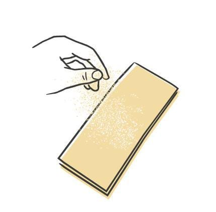
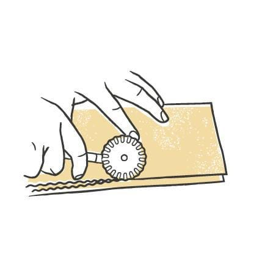
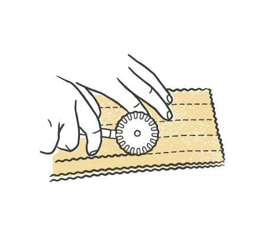
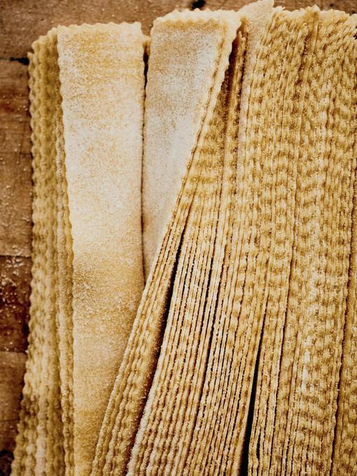
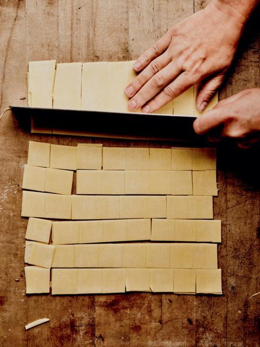

Pasta / Shapes
Tagliatelle
- Dough
- Egg Dough
- Rest
- 20-30 min at room temperature
- Source
- Pasta, Missy Robbins
- Formed
- ribbon
- Region
- Emilia-Romagna and neighboring regions. Called fettuccine in Lazio
Shaping






Method
- Make an egg-based dough, then roll and sheet it.
- Give a wooden work surface a light dusting of 00 flour. Line a sheet pan with parchment, then dust the parchment with semolina.
- Knife the sheets into 12-inch lengths and trim the ragged edges off. Save the trim for soup.
- Dust each sheet lightly with 00 flour and stack them neatly two or three high. Run a fluted pastry cutter around every edge of the stack so all the edges come out ruffled.
- Starting at the long edge of the stack, cut 1/2-inch strands working inward. A ruler or straightedge keeps the lines even while you get used to the fluted cutter.
- Dust the strands generously with 00 flour and shake them apart. Bend the batch into a horseshoe and set it on the pan.
- Repeat with the rest of the sheets.
- Dry 20 to 30 minutes at room temperature.
- To hold, cover the pan with plastic and refrigerate up to 24 hours.
Notes
- Cut width is 1/2 inch, with a fluted pastry cutter.
- Bologna's Accademia Italiana della Cucina specifies 1/3 inch. Robbins goes wider on purpose, because her tagliatelle and her fettuccine are rolled to the same thinness and the width is what separates them. Widths vary across the region anyway.
- The fluted cutter is Robbins' own distinction for this shape, not a traditional requirement.
- Sheets are 12 inches long, stacked two or three high to cut.
- Shaped into a horseshoe rather than a nest.
- Refrigerated shelf life is 24 hours.
- Suits a hearty ragu, or light butter-and-cheese sauces carrying seasonal vegetables such as mushrooms or zucchini.